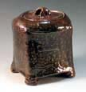
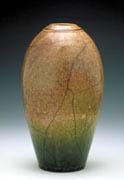
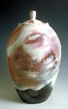
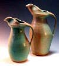
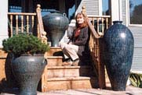

| Robert Compton
American studio potter
Robert
Compton is a versatile American potter from Bristol,
Vermont.
Compton was awarded a BA from the University of Vermont in 1972
and also worked under George Scatchard and Hideo Okino.
He makes wheel-thrown, wood-fired
and salt-glazed
stoneware as well as raku
and pit-fired
work. Compton has also been involved in various architectural
commissions. In recent times, he. has been making large vessels
(up to 4 feet/1.3 meters) and other one-of-a-kind pieces. His most
recent kiln is 250 cubic foot noborigama.

His
website also features a section where you can learn about salt-glazing,
pit-firing,
wood-firing, raku,
gas-firing,
water sculptures and the potters
wheel. At his Bristol studio, Compton also conducts
regular workshops. This season, workshops on Throwing
Giant Pots, Altering
Thrown Pots and Wood-firing
& Salt-glazing are on offer.

Compton's wife Christine
is also an artist, who since 1984 has been a self employed weaver,
producing her own line of rayon chenille scarves and shawls.
The above links go directly to sub-pages on Robert's
website. To access the full site, including navigation bar, please
go to http://robertcomptonpottery.com.
Images courtesy Robert Compton.
More Artists of the Week
More Articles
|
{kind=link}
{kind=link}
{kind=link}
{kind=link}
{kind=link}